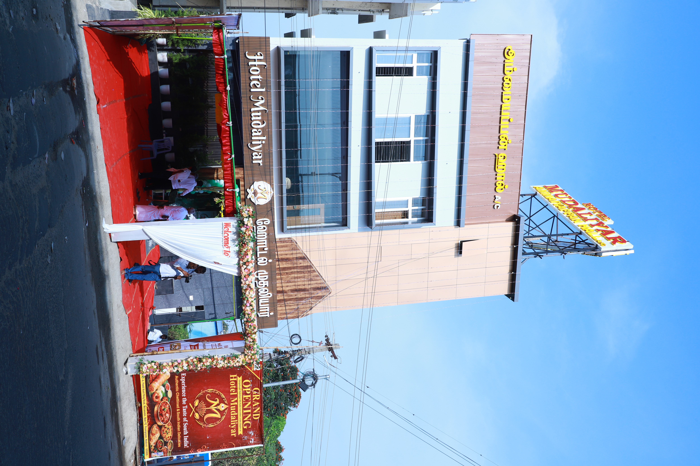

An evening stall at Goripalayam
Late Thiru P. Kandasamy Mudaliyar opened Mudaliyar Idly Kadai right next to the Goripalayam bus stand, Madurai 625 002. It opened in the evening and stayed open late.

Melamadai, Madurai · since the 1960s
ஹோட்டல் முதலியார் · முதலியார் இட்லி கடை · மேலமடை, மதுரை
Started in the 1960s by Late Thiru P. Kandasamy Mudaliyar as an evening stall beside the Goripalayam bus stand. It stayed open till 3 am for the Government Hospital, American College and the Court, and it is the home of the muttai idli. Since 22 February 2026 it has run from Pandi Kovil Ring Road.
Signature dishes
முட்டை இட்லி
Idlis chopped and fried on the tawa with egg and masala. The Goripalayam original.
from ₹130
Read more →Non-vegetarianமதுரை கறி தோசை
Dosa with chicken, mutton, prawn, boti or liver curry cooked on top.
from ₹300
Read more →Vegetarianகொத்து பரோட்டா
Parotta chopped on the tawa with salna, plus egg, chicken or mutton.
from ₹130
Read more →Non-vegetarianசீரக சம்பா பிரியாணி
Short-grain seeraga samba rice with chicken or mutton.
from ₹270
Read more →Our story
Late Thiru P. Kandasamy Mudaliyar opened Mudaliyar Idly Kadai right next to the Goripalayam bus stand, Madurai 625 002. It opened in the evening and stayed open late.
Doctors and attendants from the Government Hospital, students from American College, lawyers and clerks from the Court. The neighbourhood ate here after work.
The kadai served until 3 in the morning. Film stars and public figures came to eat or picked up takeaway.
முதலியார் இட்லி கடை appears in Kadhal (2004), starring Bharath and Sandhya. Directed by Balaji Sakthivel, music by Joshua Sridhar.
A Tamil newspaper column wrote up the muttai idli when a set cost ₹20. The kadai was also covered by Kumudam, Vasantham TV Singapore and Kairali TV.
The Goripalayam premises were acquired for the bridge construction. Mr K. Tamilselvan reopened the restaurant on Pandi Kovil Ring Road on 22 February 2026.


Upstairs at Melamadai
An air-conditioned function hall on the first floor for receptions, betrothal lunches, birthdays and company lunches. Food comes from the restaurant kitchen downstairs.
Journal
Idlis cut into pieces and tossed on the tawa with egg and masala. It started at the Goripalayam kadai and is now on the menu at Melamadai.
Read →Signature dishMadurai is known for meat curry cooked straight onto the dosa. Here are the five versions served at Hotel Mudaliyar.
Read →Signature dishMadurai is a parotta city. Here is how the parottas on the Hotel Mudaliyar menu differ.
Read →Questions
Hotel Mudaliyar is at No. 1-A, Pandi Kovil Ring Road, Melamadai, near PC Perungudi, Madurai 625020. Phone: 0452 253 0303. It moved here in February 2026 from its original site beside the Goripalayam bus stand.
Yes. Mudaliyar Idly Kadai (முதலியார் இட்லி கடை) was started in the 1960s by Late Thiru P. Kandasamy Mudaliyar next to the Goripalayam bus stand. The Goripalayam premises were acquired for the bridge construction, and the restaurant now runs from Melamadai under Mr K. Tamilselvan, with the same phone number.
Its muttai idli: idlis chopped and fried with egg and masala, which the Tamil press has written about. It is also known for Madurai special curry dosa, kothu parotta and seeraga samba biryani.
Yes. The kadai appears in the Tamil film Kadhal (2004), starring Bharath and Sandhya. It was directed by Balaji Sakthivel, with music by Joshua Sridhar.
Breakfast 7:00–11:30 am, meals 12:00–3:30 pm and dinner 6:00–11:00 pm, all days.
Yes. The menu has idly, dosa, uthappam, idiyappam, parotta, chapathi, veg meals, fried rice and noodles. Vegetarian items are marked with a green symbol.
Takeaway is available at the counter. Delivery is on Swiggy and Zomato.
Yes. Ammaiyappan Hall upstairs is air-conditioned and used for receptions, betrothal lunches, birthdays and company lunches, with catering from the restaurant kitchen. Call 0452 253 0303 to book.